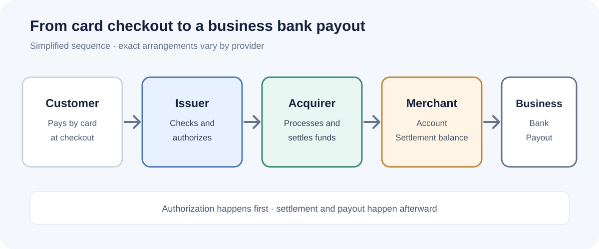

Finance and fintech
What is a merchant account? Where does your customer's money actually go?
A merchant account is a payment account used by an acquiring bank or payment provider to receive and manage funds from card transactions before they are paid out to a business. It is one part of the card-payment system, not simply another name for the business's everyday bank account.
When a customer pays by card, the payment is first authorized. After the business captures the payment, the transaction is cleared and settled through the card network and financial institutions. In a traditional acquiring setup, the acquirer credits the merchant account, then pays out the available balance to the business's nominated bank account according to the agreement. With an all-in-one payment facilitator, the business may instead use a sub-account or balance within the provider's platform rather than opening its own dedicated merchant account.

What is a merchant account?
A merchant account is an account arrangement that allows a business to accept card payments. In a traditional model, it is provided through an acquiring bank or an acquirer working with a payment processor. It receives the proceeds of card transactions after settlement, subject to processing fees, refunds, disputes, reserves and the terms of the merchant agreement.
It is not normally the account a business uses for rent, payroll and everyday banking. The merchant account sits within the payment-acceptance arrangement. The business's regular bank account is where the provider ultimately sends payouts.
The word merchant simply means the business accepting the payment. A shop, subscription company, hotel or online retailer can all be merchants. The account structure behind their payments may look different depending on whether they work directly with an acquirer or use a payment facilitator.
Merchant account vs business bank account
| Merchant account | Business bank account |
|---|---|
| Part of the card-acceptance and acquiring arrangement. | The business's everyday deposit account with a bank or financial institution. |
| Receives or records card-payment proceeds during settlement, depending on the provider model. | Receives payouts and is used for normal business banking. |
| Subject to payment-processing terms, fees, reserves, refunds and dispute rules. | Subject to the bank account agreement and applicable banking rules. |
| May be a dedicated merchant account or a provider-managed sub-account arrangement. | Usually held in the business's name, subject to the bank's onboarding requirements. |
Some payment platforms make the distinction less visible because they show a single balance and payout dashboard. That interface does not necessarily mean the underlying funds are held in a traditional merchant account in the business's own name. Ask the provider how the arrangement works legally and operationally.
How does a merchant account work?
The key is to separate authorization from settlement. An approval at checkout does not mean the money has already reached the business's bank account.
- The customer pays. They enter card details or use a digital wallet at checkout.
- The payment request is authorized. The gateway or payment platform securely sends the transaction into the processing chain. The acquirer and card network route the request to the customer's issuing bank, which approves or declines it.
- The business captures the payment. Depending on the setup, capture may happen immediately or later. For example, a retailer may authorize a card when an order is placed and capture the amount when the goods ship.
- The transaction is cleared and settled. Transaction information is exchanged and funds move through the relevant institutions. In a traditional acquiring model, the acquirer credits the merchant account, subject to fees and other adjustments.
- The provider pays out the balance. The available funds are transferred to the business's nominated bank account according to the payout schedule and any applicable holds or reserves.
Visa describes the acquiring bank as the business's side of the card system and explains that, in a traditional setup, funds are held in a merchant account as they move from the customer's bank to the acquirer. The exact flow can vary by provider, country, card scheme and payment method.
Who is involved in a card payment?
- Customer / cardholder: the person making the purchase.
- Issuing bank: the financial institution that issued the customer's card. It makes the authorization decision.
- Merchant: the business selling the product or service.
- Acquirer / acquiring bank: the merchant's acquiring-side institution. It connects the business to the card-payment system and handles settlement under the acquiring arrangement.
- Payment processor: the technology and services that route transaction messages and support processing between the parties.
- Payment gateway: the checkout-facing technology that securely captures or transmits payment details. It may be supplied separately or bundled with other services.
- Card network: the network, such as Visa or Mastercard, that carries messages and coordinates rules and settlement between participants.
One provider may perform several of these functions. That is why it is important to compare what a company actually supplies rather than assuming every provider uses the same labels. For a deeper explanation, see our guide to payment gateways vs payment processors.
Dedicated merchant account vs payment facilitator
Not every business opens a separate merchant account directly with an acquiring bank. Many small businesses sign up with a payment facilitator (often called a PayFac) or an all-in-one payment service provider. The platform onboards the business and enables it to accept payments under the provider's acquiring arrangement.
| Dedicated merchant account | Payment facilitator / aggregated model |
|---|---|
| The business is typically underwritten for its own merchant account with an acquirer. | The platform onboards the business as a sub-merchant or connected account under its broader arrangement. |
| May provide more direct control over acquiring terms and a tailored setup. | Often offers faster onboarding and a bundled checkout, processing and reporting experience. |
| Can involve more underwriting, documentation, negotiation and provider management. | Provider controls eligibility, account limits, reserves, payout rules and supported business types under its terms. |
| May suit established businesses with stable volume, specific needs or more complex payment operations. | May suit smaller businesses that value simpler setup and an integrated service. |
Visa explains that payment facilitators can enable smaller businesses to accept payments through a shared acquiring arrangement instead of each business setting up its own merchant account. The exact legal structure and terminology differ by market and provider. A platform balance or connected account should not automatically be described as a separate bank account owned by the seller.
What fees can a merchant account involve?
There is no single universal merchant-account fee. The total cost depends on the provider, business type, card mix, country, transaction volume, risk profile and negotiated terms. Common charges can include:
- Interchange: a fee associated with the card transaction and paid within the card system to the card issuer. Rates vary by card type, region and transaction category.
- Card-network assessments: network-related charges that may be included in a provider's pricing breakdown.
- Processor or acquirer markup: the provider's charge for processing, acquiring and related services.
- Gateway or platform fees: charges for checkout technology, integrations or platform features, where applicable.
- Fixed transaction fees: a set amount charged on each successful payment.
- Other costs: monthly minimums, cross-border fees, currency conversion, chargebacks, retrieval requests, hardware, PCI-related services or early termination charges, depending on the agreement.
Some providers bundle several costs into one flat rate. Others use interchange-plus or custom pricing. A headline percentage is not enough to compare offers; review the full fee schedule and model it against your actual payment mix. Our guide to choosing a payment processor explains flat-rate and interchange-plus pricing in more detail.
Worked example: what might card processing cost?
Here is a simple illustration using Stripe's published US standard online domestic-card rate at the time of writing: 2.9% + $0.30 per successful transaction. This is a provider-specific example, not a universal merchant-account price.
- Total sales: 100 × $100 = $10,000
- Percentage fees: 2.9% × $10,000 = $290
- Fixed fees: 100 × $0.30 = $30
- Total example processing fees: $320
- Amount remaining after these fees: $9,680
This illustration assumes every payment qualifies for the stated standard domestic online-card rate. It excludes any other products or services, taxes, refunds, disputes, international-card surcharges and currency conversion. Stripe's pricing can differ by country, payment method and account arrangement, so check the current pricing page and your own agreement before budgeting.
Why can payouts be delayed or held?
A successful checkout does not guarantee an immediate bank deposit. The provider may need to complete settlement, apply its payout schedule, verify account information or review unusual activity. A business may also be subject to a reserve or temporary hold under its agreement.
Common reasons include:
- Normal settlement and payout timing: processing and bank-transfer schedules take time and vary by country and provider.
- New-account review: providers may review a new merchant's business model, identity, website or expected transaction pattern.
- Unusual activity: a sudden increase in sales, unusually large transactions or a change in customer or geographic mix may trigger a review.
- Refunds and disputes: the provider may retain funds to cover expected refunds, chargebacks or other liabilities, where its agreement and applicable rules allow.
- Incomplete verification: missing business, beneficial-owner or bank details can delay onboarding or payouts.
Before relying on a provider for cash flow, read its payout schedule, reserve policy, account-review process and dispute terms. Ask what happens if the account is paused and how you can contact support.
How should a business choose a merchant account provider?
Start with the countries where you are legally able to operate and the payment methods your customers use. Then compare providers on the full service, not just the advertised rate.
- Confirm eligibility. Check supported countries, business types, restricted activities, required documents and settlement currencies.
- Compare the full price. Ask for percentage and fixed fees, interchange treatment, monthly charges, cross-border and conversion costs, dispute fees and any minimums.
- Understand the account model. Ask whether you receive a dedicated merchant account or operate as a sub-merchant / connected account under a payment facilitator.
- Check payout and reserve terms. Confirm standard payout timing, weekend and holiday treatment, reserve rights, hold triggers and how funds are released.
- Review risk and dispute support. Understand fraud tools, chargeback notifications, evidence submission, refund workflows and who is responsible at each stage.
- Test the integration. Review checkout options, APIs, plugins, reporting, reconciliation exports, webhooks and customer support.
- Read the contract. Check termination rights, rolling reserves, account closure, data portability, price changes and dispute procedures before signing.
For a small business with straightforward needs, an integrated payment provider may be the simplest place to start. A larger or more complex merchant may benefit from a dedicated acquiring relationship and negotiated pricing. Neither model is automatically cheaper or safer; the right fit depends on the business.
Common merchant account misconceptions
- “A merchant account is my business bank account.” No. It is part of the card-acceptance arrangement; payouts generally go to a nominated bank account.
- “Every business needs its own dedicated merchant account.” No. A payment facilitator can onboard businesses under a shared acquiring arrangement.
- “An approved payment means the money is in my bank.” No. Authorization, capture, clearing, settlement and payout are distinct steps.
- “The lowest advertised rate is always the cheapest.” Not necessarily. Fixed fees, card mix, international payments, reserves and dispute costs affect the real total.
- “The provider can never hold my money.” Payouts may be delayed or reserves applied under the provider's agreement and applicable rules. Read those terms before signing.
Frequently asked questions
What is a merchant account in simple terms?
It is an account arrangement that lets a business accept card payments. In a traditional setup, the acquirer uses it to receive settled card-payment funds before paying the available balance to the business's bank account.
Do I need a merchant account to accept credit cards?
You need an acquiring or payment-provider arrangement that can process card payments, but you may not need to open a separate merchant account yourself. An all-in-one PSP or payment facilitator may provide access through its platform.
Is a merchant account a bank account?
It is not the same as the business's everyday bank account. A traditional merchant account is part of the acquiring arrangement for card payments. The provider typically pays out funds to the business's nominated bank account.
What is the difference between a merchant account and a payment processor?
The merchant account is the account arrangement used to receive or manage card-payment proceeds during settlement. The processor handles transaction messages and processing between the merchant, acquirer, card networks and banks. A provider may supply both services.
How long does it take to receive money from a merchant account?
There is no universal timeline. It depends on the country, payment method, provider, settlement schedule, bank-transfer timing, account history and any review or reserve. Check the provider's written payout terms.
Can a small business get a merchant account?
Many small businesses can accept card payments through an acquirer or payment facilitator if they meet the provider's eligibility and verification requirements. Available providers and rules differ by country and business type.
Why would a merchant account be frozen or put on hold?
A provider may review unusual transaction activity, suspected fraud, disputes, incomplete verification or potential violations of its terms. The agreement should explain review, reserve and payout procedures. Contact the provider for the specific reason and the steps needed to resolve it.
Bottom line
A merchant account is part of the infrastructure that lets a business accept card payments and receive the proceeds after settlement. The important question is not only whether a provider offers a merchant account, but how its account model works, when it pays out, what it charges and what happens when a transaction is refunded or disputed. Understand those details before choosing a provider.
Sources and further reading
- Visa Acceptance Solutions: Payments — roles of the issuer, acquirer, processor and payment facilitator, plus a simplified payment flow.
- Stripe: US pricing — published standard online domestic-card pricing used for the illustrative fee calculation. Pricing can change; check the live page.
- Visa / Verifi: How online payments work — background on authorization and settlement.
This article is general educational information, not legal, banking, tax or financial advice. Provider terms, payment rules and availability vary by country and business type. Information checked 12 November 2026.